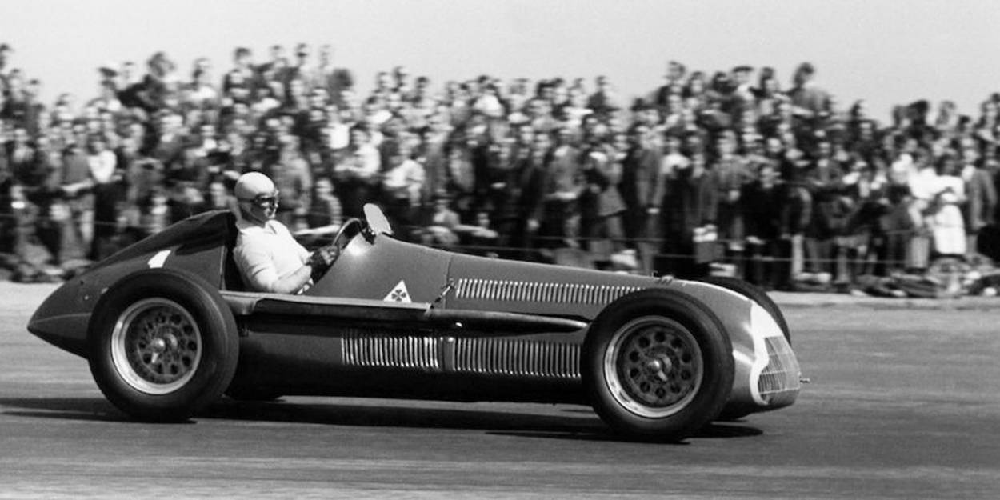
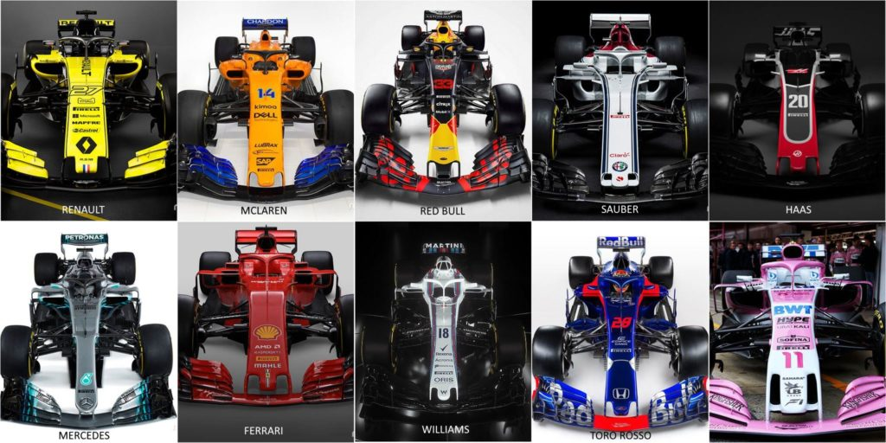
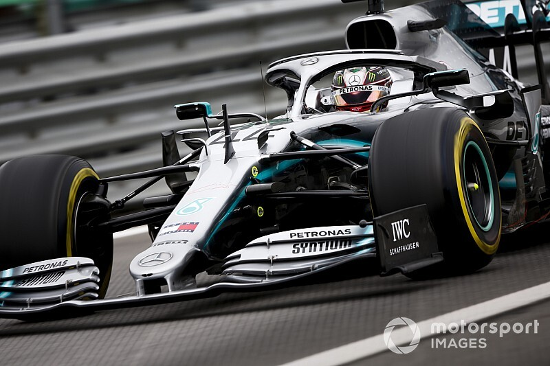
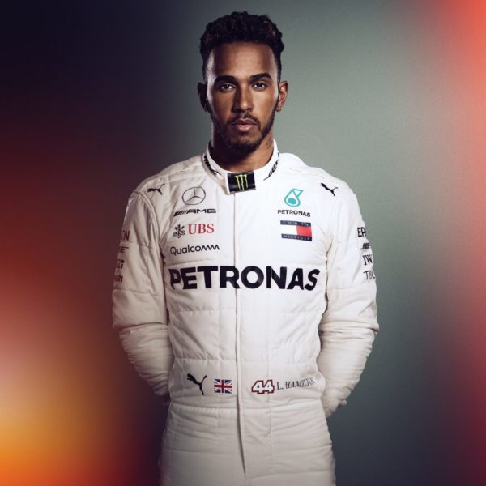
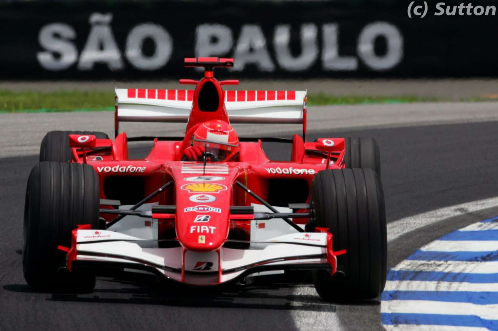
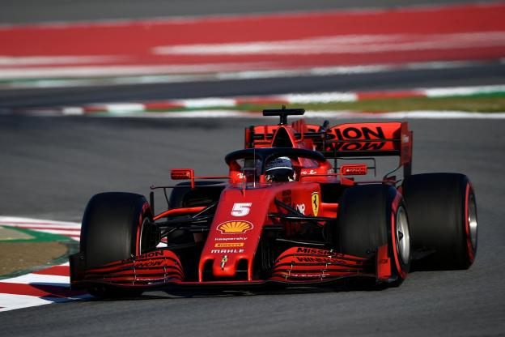
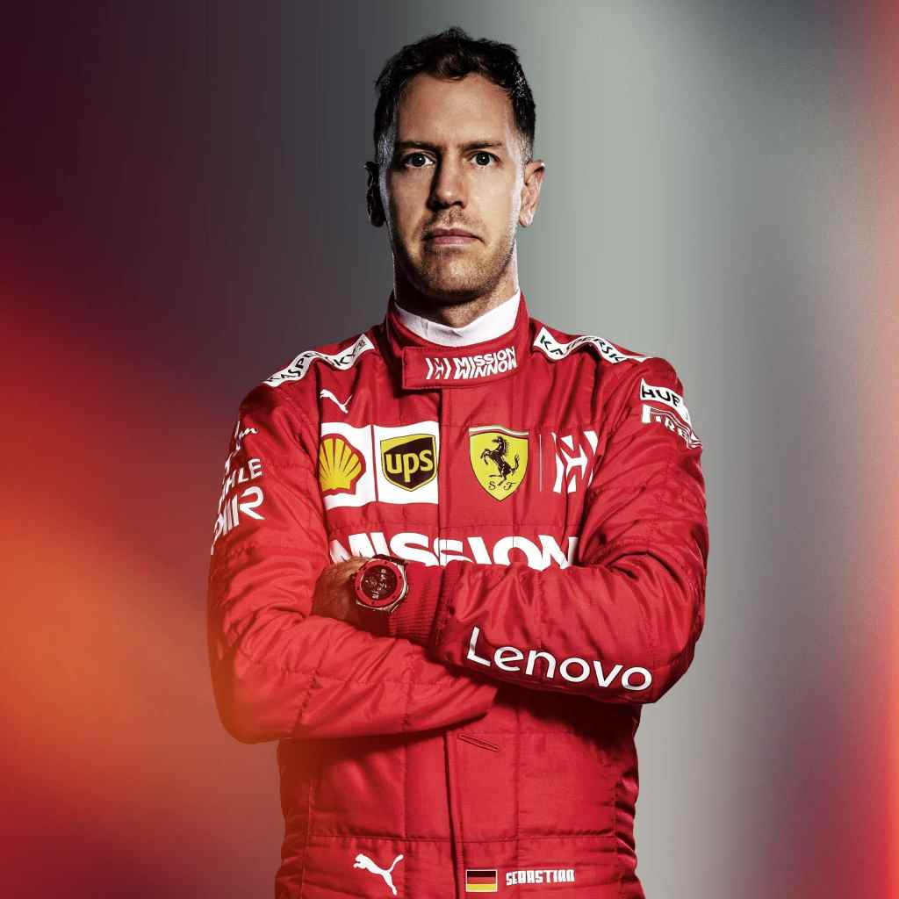

La Formule 1, communément abrégée en F1, est une discipline de sport automobile considérée comme la catégorie reine de ce sport. Elle a pris au fil des ans une dimension mondiale et elle est, avec les Jeux olympiques et la Coupe du monde de football, l'un des événements sportifs les plus médiatisés.
Chaque année depuis 1950, un championnat de pilotes est organisé et depuis 1958, un championnat de constructeurs automobiles prend place. La compétition de Formule 1 est basée sur des courses à bord de véhicules hyper sportifs sur des circuits routiers fermés ou parfois dans des villes comme Monaco ou Singapour.
Cette discipline sportive est régie par la Fédération Internationale de l'Automobile (FIA) et est gérée par la Formula One Administration (FOA). La formule 1 est considérée comme une vitrine technologique de l'industrie automobile qui expérimente des nouveautés techniques parfois issues de la technologie spatiale et susceptibles d'être adaptées sur les voitures de série.

L'histoire de la formule trouve son origine dans les courses automobiles disputées en Europe dans les années 1920 et 1930. Elle commence réellement en 1946 grâce à la création de la "Formule de Course Internationale n°1" par la Fédération Internationale de l'Automobile (FIA), qui deviendra ensuite la Formule 1.
Le premier championnat du monde de formule 1 fut crée en 1950 puis une coupe constructeurs en 1958 qui recompensa les constructeurs automobiles par rapport à la fiabilité et la performance des véhicules de chacun.
L'évolution de la formule 1 a été étroitement liée à l'évolution de l'automobile ainsi que la performance de chaque véhicule.

Au sein de la formule 1, il y a des écuries qui representent chacune une marque. Comme au football ou au basketball, les écuries représentent les équipes qui participent aux compétitions.
Comme tout sport, certaines équipes se démarquent plus que d'autres, en fonction de leurs actes ou de leur nombre de victoires.
Ainsi, les écuries les plus connues sont les suivantes :
- Renault : 383 courses disputées/ 2 titres constructeurs/ 2 titres pilotes/ 35 victoires
- McLaren : 863 courses disputées/ 8 titres constructeurs/ 12 titres pilotes/ 182 victoires
- Red Bull : 286 courses disputées/ 4 titres constructeurs/ 4 titres pilotes/ 62 victoires
- Sauber : 89 courses disputées/ 0 titres constructeurs/ 0 titres pilotes/ 1 victoires
- Haas : 83 courses disputées/ 0 titres constructeurs/ 0 titres pilotes/ 0 victoires
- Mercedes : 210 courses disputées/ 6 titres constructeurs/ 8 titres pilotes/ 102 victoires
- Ferrari : 991 courses disputées/ 16 titres constructeurs/ 15 titres pilotes/ 238 victoires
- Williams : 703 courses disputées/ 9 titres constructeurs/ 7 titres pilotes/ 114 victoires
- Toro Rosso : 268 courses disputées/ 0 titres constructeurs/ 0 titres pilotes/ 1 victoires
- Force India : 203 courses disputées/ 0 titres constructeurs/ 0 titres pilotes/ 0 victoires
Lewis HAMILTON


Lewis Carl Davidson Hamilton, né le 7 janvier 1985 à Stevenage dans le Hertfordshire en Angleterre, est un pilote automobile britannique, sextuple champion du monde de Formule 1 en 2008, 2014, 2015, 2017, 2018 et 2019 et recordman du nombre de pole positions.
Hamilton a fait ses débuts dans la formule 1 au sein de l'écurie McLaren-Mercedes et devient le plus jeune champion du monde de l'histoire de la Formule 1, le 2 novembre 2008, avec cette même écurie.
À l'âge de 35 ans, Hamilton a pour numéro permanent 44 avec 250 courses à son actif, 88 poles positions ce qui fait de lui le recordman, 47 meilleurs tours en course, 151 podiums et 84 victoires.
Michael SCHUMACHER

Michael Schumacher, né le 3 janvier 1969 à Hürth-Hermülheim, près de Cologne en Allemagne, est un pilote automobile allemand, surnommé « Schumi » par ses fans ou parfois par les journalistes. Avec sept titres de champion du monde de Formule 1, 91 victoires en Grand Prix de Formule 1 et 68 pole positions, il possède le plus beau palmarès de ce sport. À ce jour, Michael Schumacher détient la plupart des records de la Formule 1 à l'exception des records de précocité.
Schumacher commmence sa carrière en 1991 dans une jeune écurie du nom de : Jordan. Peu après, il fut recruté par l'écurie Benetton Formula et remporta 2 titres de champion du monde. Ensuite, en 1996, il rejoint la Scuderia Ferrari, une écurie dans laquelle il remporta 5 titres de champions du monde consécutifs. Enfin en 2010, il rejoint l'écurie Mercedes mais n'obtient aucune victoire et annonce sa retraite à l'âge de 43 ans.
Alors, à l'âge de 51 ans, Schumacher a effectué 307 courses avec 68 poles positions, 155 podiums ce qui fait de lui le recordman et 91 victoires qui est également un record.
Sebastien VETTEL


Sebastian Vettel, né le 3 juillet 1987 à Heppenheim en Allemagne est un pilote automobile allemand, vainqueur quatre fois consécutivement du championnat du monde de Formule 1, en 2010, 2011, 2012 et 2013 comme seuls avant lui l'avaient été Juan Manuel Fangio et Michael Schumacher.
Vettel fut tout d'abord un pilote-essayeur pour BMW Sauber F1 Team avant de lancer sa carrière en Formule 1. Il commence sa carrière dans l'écurie Scuderia Toro Rosso puis rejoint l'écurie Red Bull Racing pour laquelle il a obtenu 38 victoires et 44 poles positions. Puis, en 2015, il rejoint l'écurie Scuderia Ferrari et remporte 4 titres de champions du monde. C'est à partir du 12 mai 2020 que Ferrari annonce que le contrat de Vettel ne sera pas renouvelé.
Ainsi, à l'âge de 32 ans, Vettel a pour numéro permanent 5 avec 240 courses à son actif, 57 poles positions, 38 meilleurs tours en course, 120 podiums et 53 victoires.
Pendant le championnat du monde de Formule 1, 21 circuits sont selectionnés sur une centaine afin de correspondre à 3 thèmes : Classiques, Modernes et Atypiques.
Par exemple, les circuits selectionnés lors du championnat de 2018 sont les suivants :
Circuits classiques - Circuit de Catalogne à Montmelo (Barcelone) : Longueur: 4,655 km - Record du tour (en course): 1:21.670
- Circuit de Silverstone (Oxford) : Longueur: 5,891 km - Record du tour (en course): 1:30.621
- Hockenheimring (Francfort) : Longueur: 4,574 km - Record du tour (en course): 1:13.780
- Hungaroring (Budapest) : Longueur: 4,381 km - Record du tour (en course): 1:19.071
- Circuit de Spa-Francorchamps (Liège) : Longueur: 7,004 km - Record du tour (en course): 1:46.577
- Autodrome de Monza (Milan) : Longueur: 5,793 km - Record du tour (en course): 1:21.046
- Circuit de Suzuka (Japon): Longueur: 5,807 km - Record du tour (en course): 1:31.540
- Circuit d'Interlagos (Sao Paulo) : Longueur: 4,309 km - Record du tour (en course): 1:11.044
Circuits modernes - Circuit de Shanghai (Chine) : Longueur: 5,451 km - Record du tour (en course): 1:32.238
- Circuit de Sakhir (Manama) : Longueur: 5,412 km - Record du tour (en course): 1:31.447
- Autodrome de Sotchi (Russie) : Longueur: 5,848 km - Record du tour (en course): 1:36.844
- Circuit des Amériques (Austin) : Longueur: 5,513 km - Record du tour (en course): 1:37.766
- Circuit de Yas Marina (Abou Dhabi) : Longueur: 5,554 km - Record du tour (en course): 1:40.279
- Red Bull Ring (Spielberg) : Longueur: 4,318 km - Record du tour (en course): 1:07.411
- Circuit des Frères Rodriguez (Mexico) : Longueur: 4,304 km - Record du tour (en course): 1:18.785
- Circuit Paul-Ricard au Castellet (Toulon) : Longueur: 5.861 km
Circuits atypiques - Albert Park (Melbourne) : Longueur: 5,303 km - Record du tour (en course): 1:24.125
- Monaco : Longueur: 3,337 km - Record du tour (en course): 1:14.820
- Circuit Gilles-Villeneuve (Montréal) : Longueur: 4,361 km - Record du tour (en course): 1:13.622
- Circuit de Bakou (Azerbaïdjan) : Longueur: 6.003 km - Record du tour (en course): 1:43.441
- Circuit de Marina Bay (Singapour) : Longueur: 5,065 km - Record du tour (en course): 1:45.008